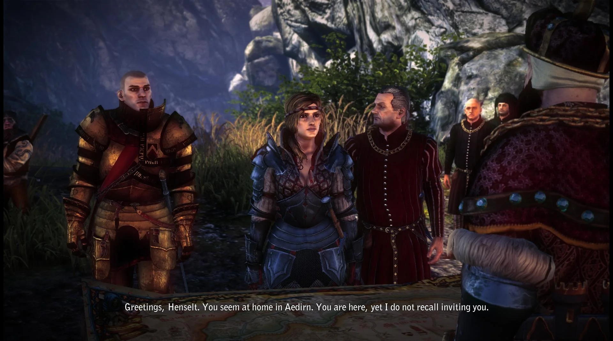

Hikayeye Giriş
Giriş sırasında Rivialı Geralt, "Mavi Şeritliler" (Blue Stripes) olarak bilinen Temerya özel kuvvetlerinin komutanı "Vernon Roche" tarafından bir ceza evinde "Temerya kralı Foltest" suikastı ile ilgili sorguya çekilir. Geralt koruması olarak görev yaptığı sırada Foltest'ın ölümüne yol açan olayları anlatır.
Foltest Temerya'nın soylu aileleri tarafından kendisine karşı başlatılan ayaklanma sırasında isyancılar tarafından esir tutulan gayrimeşru çocukları, "Anais" ve "Boussy"'i kurtarmak için kendi kişisel savaşını başlatmıştır. Foltest çocuklarını bulduğu sırada kör bir keşiş kılığındaki bir suikastçı tarafından öldürülür.
Geralt henüz tepki dahi veremeden kaçan suikastçı Geralt'ı Foltest'ın cesediyle baş başa bırakır. Geralt Temerya askerleri tarafından yakalanıp "Kral Katili" damgası yer. Savunmasını dinledikten sonra Roche, Geralt'ın masum olduğuna karar verir ve ceza evinden kaçmasına yardım eder.
Bir sahire ve Geralt'ın (o sırada) kız arkadaşı olan "Triss Merigold", Roche ve Geralt birlikte kral katilini aramak üzere Flotsam adlı bir ticaret kasabasına doğru yola çıkarlar.
Birinci Bölüm
"Flotsam"'a ulaştıklarında Geralt, Roche ve Triss "Iorveth" tarafından pusuya düşürülür.

Ama Triss'in yaptığı büyü sayesinde okçulardan kurtulurlar. Geralt suikastçının Scoia'tael (Türkçe "Sincaplar") olarak bilinen Elf isyancıları ile işbirliği içinde olan bir "Witcher" olduğunu öğrenir.
Suikastçının başka bir kralı daha öldürdüğü ortaya çıkar. Bu,komşu krallık "Aedirn"'in kralı olan "Demavend" adında biridir.
Aedirn'e ulaştıklarında Geralt şehir meydanında asılmak üzere olan "Zoltan" ve "Dandelion"'u görür. Korumaları ile yapılan savaştan sonra, Flotsam komutanı "Loredo" belirli koşullar altında onları özgür bırakır ve Geralt'tan konağında onunla buluşmasını ister.
Buluşmada Loredo şehrin ticaret yollarını kesintiye uğratan bir canavar olan "Kayran"'ı öldürmelerini ister. "Büyücü Sile de Tansarville" yardımıyla Kayran'ı öldürdükten sonra Geralt bir Scoia'tael teğmeni ile hapishanede buluşur.
Teğmen kral'ın katilinin "Letho" olarak bilinen biri olduğunu öne sürer, İddiasına göre Scoia'tael'in lideri olan Iorveth'e ihanet etme amacıyla yapmıştır. Iorveth bunu öğrenir ve Geralt ile birlikte, şimdi de Iorveth'i öldürme planı yapmakta olan Letho ile yüzleşmeye karar verirler.
Tam bu sırada Roche bir silahlı bir orduyla çıkagelir... Bu noktada oyuncunun bir seçim yapması gerekir;
Eğer Iorveth'e yardım etmeyi seçerse, bu Flotsam'da insan olmayan tüm ırkların kılıçtan geçirilmesine neden olacaktır.
Eğer Roche'a yardım etmeyi seçerse, bu Iorveth'in tutsak edilmesi ve Flotsam'da şölen yapılması ile sonuçlanacaktır..
Oyuncunun seçiminden sonra Geralt Letho ile savaşır ve yenilir.
Ama Letho, Geralt'ın geçmişte onun ve "Witcher Birliğinin" hayatını kurtardığını öğrenince Geralt'ın hayatını bağışlar .
Letho Triss'i kaçırır, ve onu ve kendisini zorla Aedirn'e teleport ettirir.
Bu noktada oyuncu bir kez daha Iorveth veya Roche'a yardım etmek arasında bir seçim yapacaktır ve bu seçimde oyunun 2. bölümünün gidişatını etkileyecektir...
İkinci Bölüm:(Iorwerth'in Yolu)
Eğer Geralt Iorveth'e yardım etmişse , Geralt ve Iorveth, Loredo'yu öldürmek veya zindanın kulesindeki Elf kadınları kurtarmak arasında bir seçim yaptıktan sonra Aidern'a doğru yola çıkarlar.

Orada, merhum Kral Demavend'ın oğlu "Prens Stennis" ve "Saskia Dragonslayer" olarak bilinen isyancı komutan liderliğinde düzenlenen komşu krallık "Kaedwen Kralı", "Kral Henselt" ve isyancıların birleşik ordusu arasında geçen bir toplantı vardır. Toplantıda bir kavga patlak verir, ama eski bir lanetin yeniden canlanması kavgayı böler ve hayalet askerler insanlara saldırmaya başlarlar.
Geralt ve Iorveth tam bu sırada oraya gelirler ve Saskia'nın danışmanı olan "Büyücü Philippa Eilhart"'ın da yardımlarıyla Prens Stennis ve Saskia'ya destek olurlar ve sonrasında isyancılar bir savaş konseyi kurulur.
Saskia 3 savaşçı gücü ("Prens Stennis'ın emri altındaki kraliyet yanlısı güçler", "Vergen kasabasının cüce savaşçıları" ve "Iorveth'in liderliğindeki Scoia'tael") tek bir savaşçı güç altında toplayıp Kral Henselt'i yenilgiye uğratmak ve sonrasında kendisinin kraliçe olarak yönettiği bağımsız bir ulus oluşumunu ilan etmek niyetindedir. Ancak toplantı tarihi yaklaşırken Saskia içtiği şarapla zehirlenir.
Geralt'a 2 görev verilir;
1 - Saskia'yı iyileştirmek için panzehir formüle etmeye yarayacak malzemeleri elde etmek ;
2 - Savaş meydanındaki laneti kaldıracak sihirli nesneyi bulmak .
Bu arada bir grup köylü Prens Stennis'i Saskia'yı zehirlemekle suçlar. Bu noktada Geralt köylüylerin Prens Stennis'i öldürmesine izin vermekle, (Bu sayede Prens Stennis'in soylu kanı elde edilerek Saskia iyileştirilebilir ) bir mahkeme yapılmasına karar vermesi arasında bir seçim yapması gerekir. ( Bu durumda Geralt soylu kanı Henselt'ten elde edecek)
Geralt'ın yardımıyla Philippa Eilhart Saskia'yı iyileştirmekte başarılı olur.
Bu arada Geralt, Triss'in Aidirn'e ulaştıklarında Letho tarafından bırakıldığını ve hemen sonrasında Nilfgaard imparatorluğunun casusları tarafından kaçırıldığını öğrenir. Ama Geralt kurtaramadan önce Triss Nilfgaard güçleri tarafından "Loc Muinne"'e götürülür.
Geralt daha sonra eski savaşı tekrar yaşamak ve laneti sonlandırmak için savaş alanına girer ve savaşın sonunu getirerek laneti sonlandırır.
Lanetin kaldırılmasıyla Kral Henselt ve güçleri Vergen'e saldırırlar, ama isyancılar Kaedwenin ordusunu yenilgiye uğratırlar ve Henselt Saskia'nın koşullarını kabul etmek zorunda kalır.
Savaş sırasında, Geralt Saskia'nın aslında "insan formunda bir ejderha" olduğunu fark eder.
Iorveth Saskia'nın tuhaf davrandığını fark eder ve Dethmold'a Saskia'yı yargısız infaz etmesi için emir verir. Ama Dethmold ve Geralt harekete geçmeden önce Philippa Saskia'yı ve kendini Loc Muinne'e teleport eder. Geralt ve Iorveth Philippa'nın büyüyle Saskia'nın zihnini ele geçirdiğini ve onu kontrol ettiğini öğrenirler.İkisinin Philippa'nın peşinden Loc Muinne'e gitmekten başka seçenekleri kalmaz.
İkinci Bölüm (Roche'un Yolu)
Eğer Geralt Flotsam'da Roche'a yardım etmişse,
Roche Geralt'a kasabanın komutanı Bernard Loredo'yu Kaedwen için casusluk yaptığından dolayı öldürtür. (Ve bu süreçte Ves, Loredo tarafından tecavüze uğrayan ve loreda'dan bir oğlu olan tutsak bir elf'e yardım etmiş, ama elf'in intihar etmesine engel olamamıştır...)
Elf'in çocuğunu bir bakıcıya bıraktıktan sonra Blue Stripe'lar Aiedirn'nin yukarı bölgesine gitmek için yola çıkarlar. Orada, merhum Kral Demavend'ın oğlu Prens Stennis ve Saskia Dragonslayer olarak bilinen isyancı komutan liderliğinde düzenlenen ve komşu krallık Kaedwen kralı, "Kral Henselt" ve isyancıların birleşik ordusu arasında geçen bir toplantı vardır.
Bir kavga patlak verir, ama eski bir lanet'in yeniden canlanması kavgayı böler ve hayalet askerler insanlara saldırırlar. Geralt ve Iorveth tam bu sırada oraya gelirler ve , King Henselt'ın da yardımlarıyla Henselt'in iki danışmanı olan "Sihirbaz Dethmold" ve Büyücü Sile de Tansarville'a destek olurlar.
Geralt, Henselt tarafından hem savaş meyanındaki laneti kaldırması için (Bu sayede Henselt'in askeri gücü Vergen'i işgal edebilecektir.) hem de başka bir büyücü olan ve Henselt'in 3 yıl önce onu lanetlediği için öldürdüğü "Sabrina Glevissig"'in lanetini kaldırması için görevlendirilir.
Geralt, Bir yandan Triss'i aramaya devam ederken öte yandan kral yanlısı Kaedweni ordusu içinde Henselt'in Nilfgaard ile işbirliği yaptığına inananlar tarafından başlatılmış bir isyan olduğunu fark eder. Triss'in Nilfgaard casusları tarafından götürüldüğünü öğrenir, ama onlarla karşılaşmadan önce Loc Muinne'den ayrılmışlardır.
Geralt, Henselt'in üzerinden Sabrina Glevissig'in lanetini kaldırdıktan sonra Letho ile işbirliği içinde olan iki Witcher,"Serrit"ve"Auckes"kralı öldürmeye teşebbüs ederler.
Geralt Hendselt'i savunur ve Auckes'u öldürür...
Geralt büyü gücünü kullanarak ölü wticher'ın anılarına ulaşır. Bu sayede kralın katilinin şu anda Loc Muinne'de olan Sile de Tansarville ile işbirliği yaptığını öğrenir...
Geralt daha sonra savaş alanındaki laneti kaldırır ve Kral Vergel'i işgal etmeye başlar. Roche, Kaedweni ordusunun içindeki isyancıların lideri konumuna gelmiştir. Henselt ve Dethmold, "Ves" dışında (Henselt tarafından tecavüze uğrayan kadın) Roche'un komutası altındaki her bir askeri asar...
Geralt ve Roche Henselt'in peşinden Vergen'e giderler. Ama çok geç kalırlar, Sile de Tansarville ve Philippa Eilhart kendinden geçmiş Saskia ile birlikte çoktan Loc Muinne'e kaçmışlardır. Geralt ve Roche geride kalan Kaedweni güçlerini öldürürler ve Geralt'ın bu noktada Roch'un Henselt'i öldürmesine izin verip vermeyeceği ile ilgili seçim yapması gerekir.
Sonunda Geralt (Daha önce kime yardım ettiğine bağlı olarak) Iorveth veya Roche ile birlikte Loc Muinne'e ulaşır.
Büyücüler Conclave olarak bilinen yeni bir sihirli yönetim kurallarını oluşturmak için Loc Muinne'de bir toplantı için çağrıda bulunurlar. Böylece tüm kraliyet liderleri Loc Muinne'de buluşurlar. Philippa Eilhart ve Sile de Tansarville kendi iktidarını kurmak için toplantıyı kullanmak niyetindedirler. Ve bir olaylar zincirini tetiklemek için Kral Demavend'in öldürülmesini emrederler.Toplantıda koz olarak hala büyünün etkisinde olan Saskia kullanmak niyetindedirler.
Geralt'ın Nilfgaard casuslarının rehin tuttukları Triss ile birlikte Loc Muinne' de olduklarını fark eder. Eğer Geralt Loc Muinne'e Roche ile gelmişse, Foltest'ın gayrimeşru kızı,"Prenses Anais"'in Dethmold tarafından kaçırıldığını öğrenecektir. Ve Triss'i veya Anais kurtarmak arasında bir seçim yapması gerekecektir.
Eğer Geralt Loc Muinne'e Iorveth ile gelmişse, Philippa'nın Redanya kralı, Kral Radovid tarafından yakalandığını ve gözlerinin kör edildiğini öğrenecektir. Bu durumda Triss'i veya artık kör olan Philippa'yı kurtarmak arasında bir seçim yapması gerekecektir. (Philippa aynı zamanda Saskia üzerindeki büyüyü kaldırabilecek tek kişidir.)
Eğer Geralt Anais'i Roche ile birlikte kurtarmışsa, bu Roche'un intikam almak için Dethmold'u vahşi bir şekilde öldürmesiyle sonuçlanır. Geralt ve Roche Anais'i "Kral Radovid" ve Redanyalılara ya da John Natalis ve Temeryalılara göndermek arasında bir seçim yapacaklardır.
Eğer Geralt Phillipa'yı kurtarmışsa, Phillipa Hançeri ulaşmaları için Geralt ve Ioverth'e yardımcı olur. Eğer Triss kurtarılmış ise Geralt kime yardım etmiş olursa olsun Nilfgaard elçisi ölür.
Kraliyet liderleri ve Sile de Tansarville arasındaki toplantı başlar. Eğer Geralt Saskia ve Iorveth'e yardım etmişse, Saskia kendisinin kraliçesi olacağı özgür bir ulus oluşturma planını açıklar.
Eğer Geralt Roche'a yardım etmiş ve Anais'i kurtarmayı seçmişse, ya Kral Radovid onu koruması altına alacak ve Temerya'nın Redanya'nın himayesi altında olduğunu ilan edecektir, ya da yönetecek yaşa gelinceye kadar Anais'i Natalis'in bakımı altına verecektir.
Eğer Geralt Roche'a yardım etmiş ve Triss'i kurtarmayı seçmişse, Roche'un kanun kaçağı olduğu ilan edilecek ve Temerya'nın yönetimi belirsiz kalacaktır. Nilfgaard kuvvetleri Letho ile birlikte geldiklerinde toplantı yarıda kesilecek ve büyücülerin planlarını açığa çıkaracaktır,veya eğer Geralt Triss'i kurtarmışsa iki büyücü gelir ve Sile de Tansarville'i suçlar. Bunun üzerine Radovid Sile de Tansarville'in tutuklanmasını emreder, ama Sile Saskia'yı ejderha formuna sokar ve kaçar.
Geralt Sile de Tansarville'in peşine düşer;
Fakat Sile ışınlanma aygıtını çalıştırmayı başarır. Ancak aygıt Letho tarafından bozulmuştur ve aygıt ışınlamak yerine Sile de Tansarville'in ölümüne neden olacaktır. Geralt'ın Sile'nın ölmesine izin vermek ile hayatını kurtararak kaçmasına izin vermek arasında bir seçim yapması gerekecektir.
Geralt daha sonra ejderha formundaki Saskia ile savaşır ve nihayetinde onu yener...
Eğer Geralt Saskia ve Iorveth'e yardım etmiş ve Philippa'yı kurtarmayı seçmişse, Saskia'nın zihnini kontrol eden büyüyü bozabilecektir, diğer durumda;
Geralt'ın iki seçeneği vardır.
Saskia'nın yaşamasına izin vermek;
Saskia'yı öldürmek...